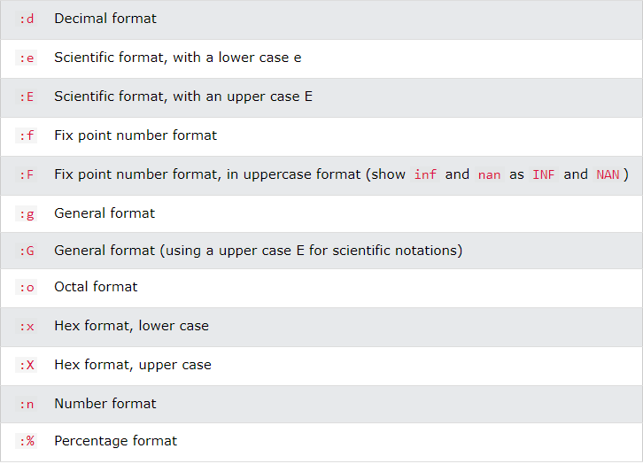

Szövegek formázott megjelenítése:
-
Legegyszerűbb formában simán vesszővel, vagy
+ jellel konkatenálva,
összefűzve írjuk a szövegeket.
- De ekkor figyelnünk kell a típuskényszerítésre!
-
Ezért szoktunk inkább formatált sztringeket (formatted string) használni.
-
Ódivatú formátum (Old Style Format): ekkor a
%
operátort használjuk. Mivel ez az operátor egy argumentumot
tud csak kezelni, ezért több érték kezeléséhez
tuple-t használ.
-
Új stílusú formátum (New Style Format): ekkor a
string.format() metódust
használjuk.
-
Sztring interpoláció (String Interpolation): ekkor az f-String-et
használunk.
- Formázást segítő jelölők (flag).

- Néhány példa.
Forrás:
real python string interpolation
real python interpolated string formatting
w3schools/python